Overview
Before man had the luxury of 4k videos and high-quality visuals production, creating the illusion of motion was not so fancy. Back in 1860, the first flipbook was created opening doors later to more sophisticated stop motion applications. The whole thing about videos is to play the right light on the right time, our brains do the rest and fill the gaps between them. The objective of this circuit is to give Bahgat "running up there" a chance to wave, run, then celebrate just with a few “not so few” ics.
Index
- Timer Setup
- Counter Setup
- Drafting Motion
- Man to Machine
- Logic Circuit
- Implementing the Circuit
- Tips and Errors
Timer Setup
A 555 timer in Astable state -p.11 in the datasheet- takes 5 volts and outputs a square wave. Tick tock one zero, and it theoretically loops forever. Here is the schematic of the circuit:
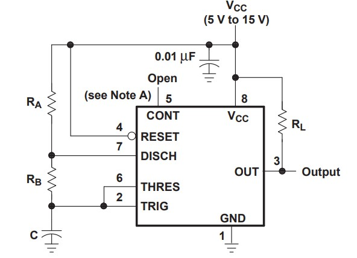The details of how the circuit works is irrelevant now. All we need to know is that output pin 3 in the above circuit will give us a clock signal, and that is enough.
Counter Setup
To create the illusion of motion, we need to turn power on and off repeatedly. Doing so with buttons would practically corrupts the whole trick behind stop motion. That is why we need a counter ic.
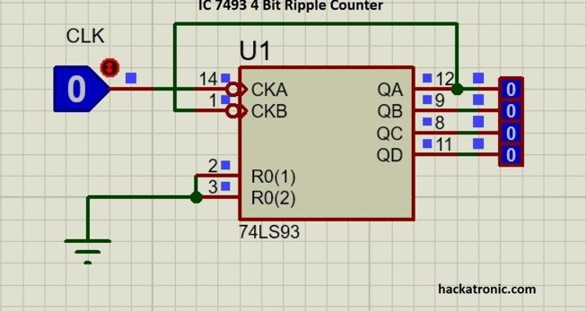All it does is take a square wave and give a binary 1-15 count. The details of how the circuit works is irrelevant now. All we need to know is that CKA will take a square wave and give 15 binary numbers in order from QA-QD, and that is enough.
Ps: all circuit connections and Tinkercad schematics/projects are attached in the Refer to section.
Drafting Motion
Clear Definition
What exactly do we want the motion to look like? Below is my initial brainstorming sketch, it helps defining different positions later. 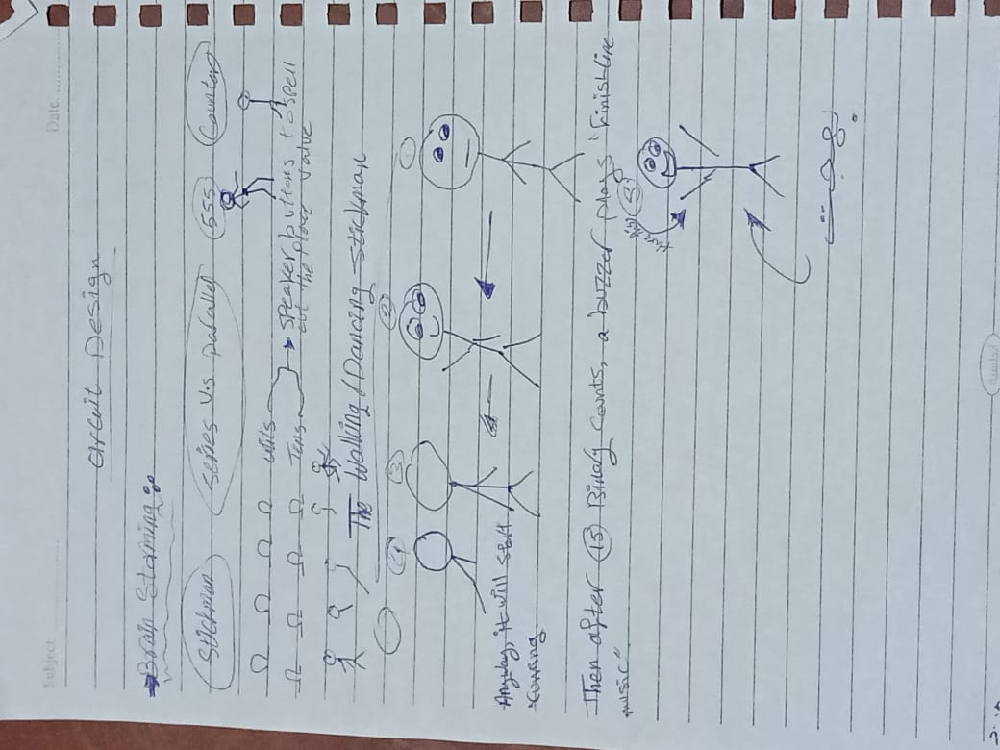Dismantling
After drawing different positions individually, we need to break them down to smaller parts for easier manipulation. For example, in this sketch the head “position 1” is repeated in all positions. Now we are not going to create a head for each piece of motion, but we will give the same head a true signal every time. Another example is the smile “position 11”. This one is active only in motions 2 and 5, so it will get a true signal ONLY in motions 2 and 5. And life goes on…Putting different pieces of motion over each other allows eliminating the overlapping parts. You can visualize and draw or just use tracing paper to draw them individually then put all the layers together and trace the whole figure.
Assembly
Now we can reassemble the small positions to view Bahgat in one piece again. Just check your initial pieces of motion and turn on all the corresponding positions; see below for more illustration 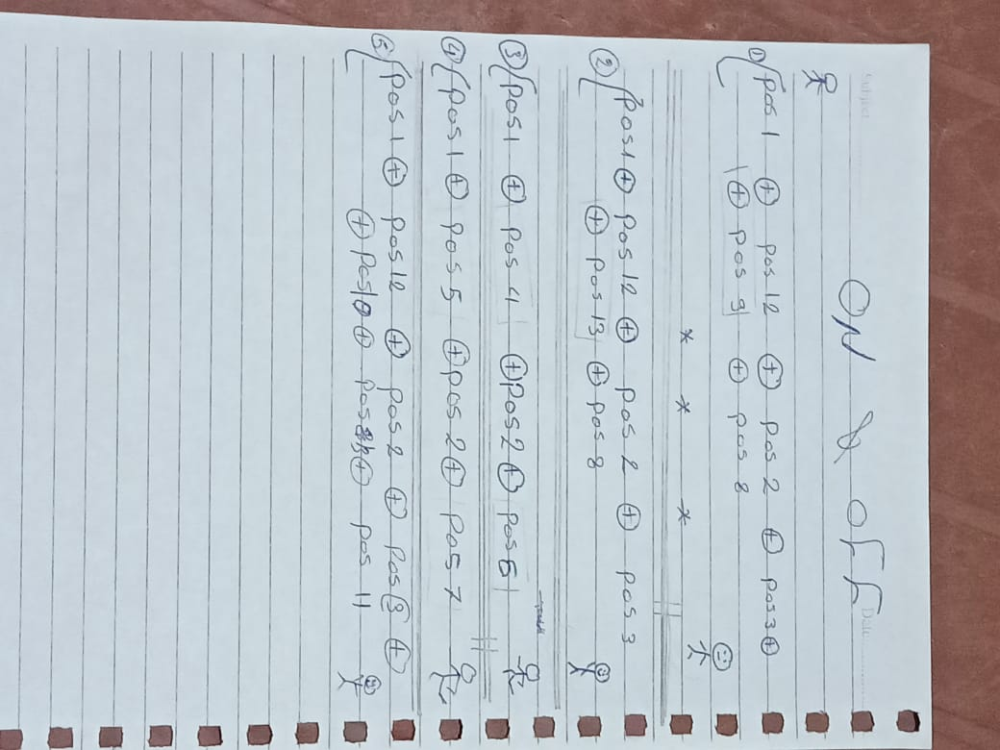Now we have a definite roadmap. Turn X on, Turn Y on, Turn z off or whatever. This expression is exactly how humans communicate with tech. The script is ready but yet to be translated.
Man to Machine
In the table below, the left side represents the counter output truth table. It is fixed. The right side is our truth table: which positions do we need true and when.
Ps: positions 1&2 “the head and body” are always True, so I connected them directly to the power source to minimize complexity “the circuit is already messed up”.
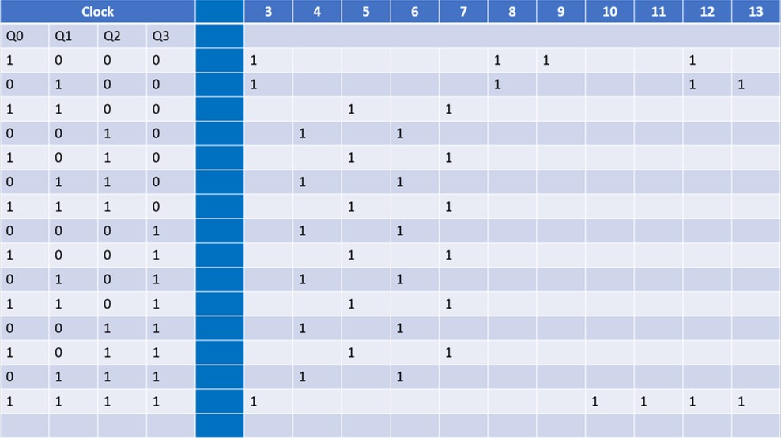After creating the truth table, make sure positions that only appear together and no where else are connected together. It makes life way easier and reduces the number of outputs, like positions 4&6 below or 5&7. They could have been merged together.
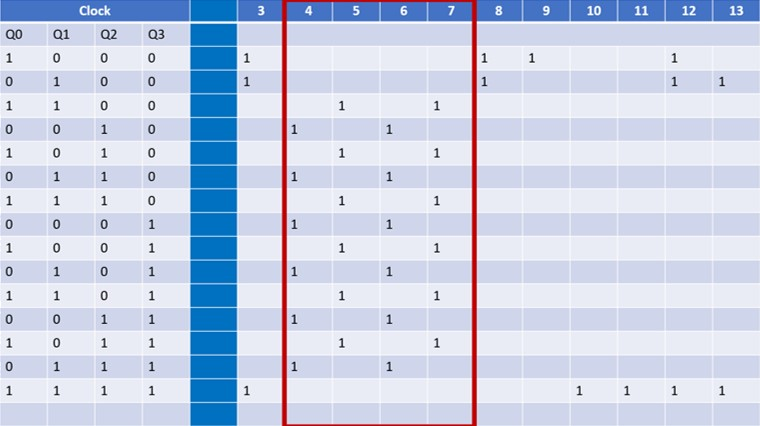Logic Circuit
To obtain these very specific Boolean combinations, a bunch of logic gates allow current to flow from the clock to only the desired positions. What gates to use and where? You are very welcome to try and draw your own K map. But life is too short to do it manually; I used CircuitVerse. All you need to do is insert the truth table “the blue big thing we created in the previous step” and watch the software do its magic.
Ps: find a detailed tutorial on how to use CircuitVerse in the references section below.
You should end up with a table like this
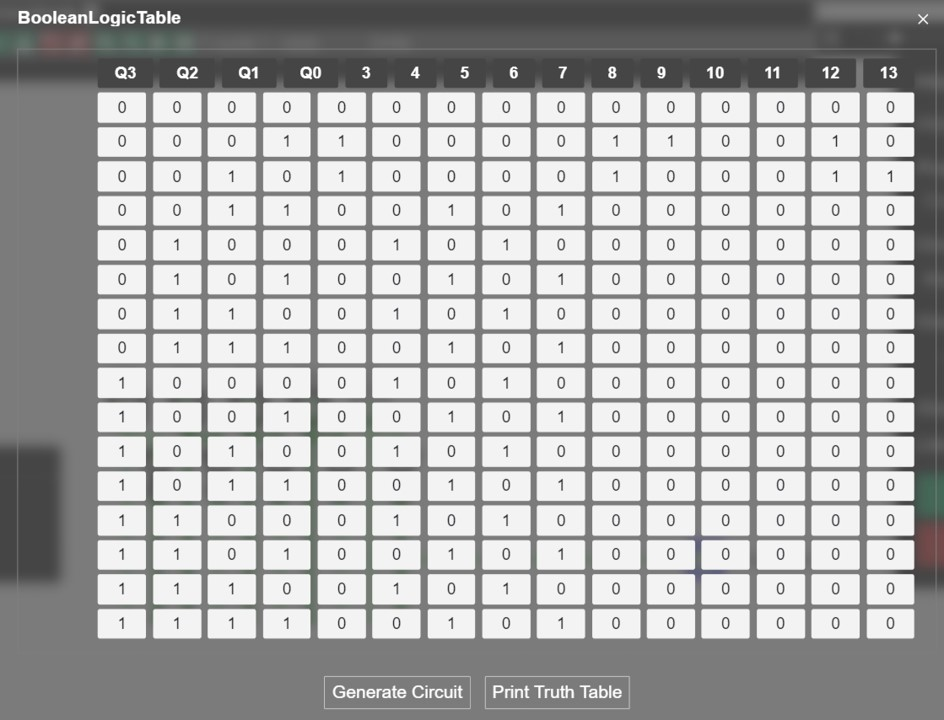Generate the circuit and do not freak out…
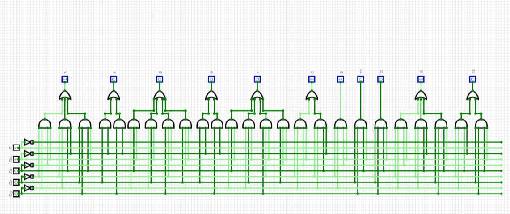The circuit looks awful, but a small trick to reduce the agony is to copy-paste a screenshot of it into any photo editor and put marks on the wires you are done connecting. See below for illustration
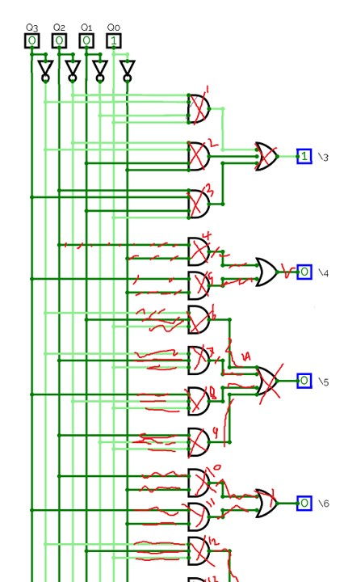Implementing the Circuit
There are 3 types of logic gates used here:
But in the circuit generated above, there are AND & OR gates with three and four inputs!!
Simply enough, build a new gate with three/two other gates. take the first two inputs into the first gate, take the output and the third input with a second gate, then take the last input with the second gate output into the third gate. See below to visualize better…
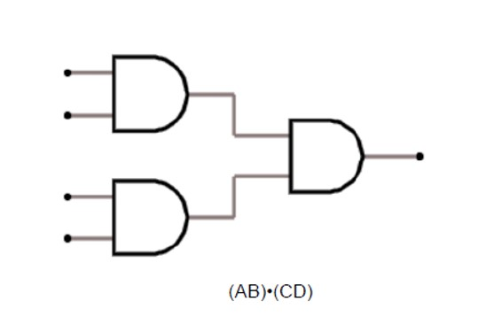Same goes with the OR gates
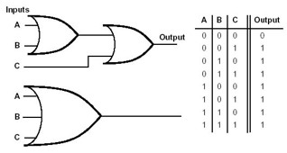These integrated circuits are all available in Tinkercad, they make life easier so make sure to pick the right ic according to the number of inputs you have. Below are all the schematics you will need for this specific circuit
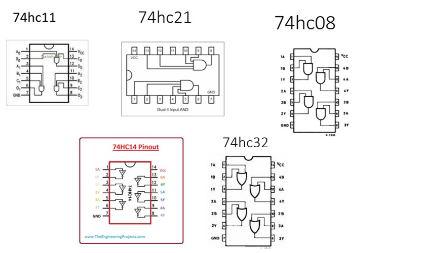Tinkercad
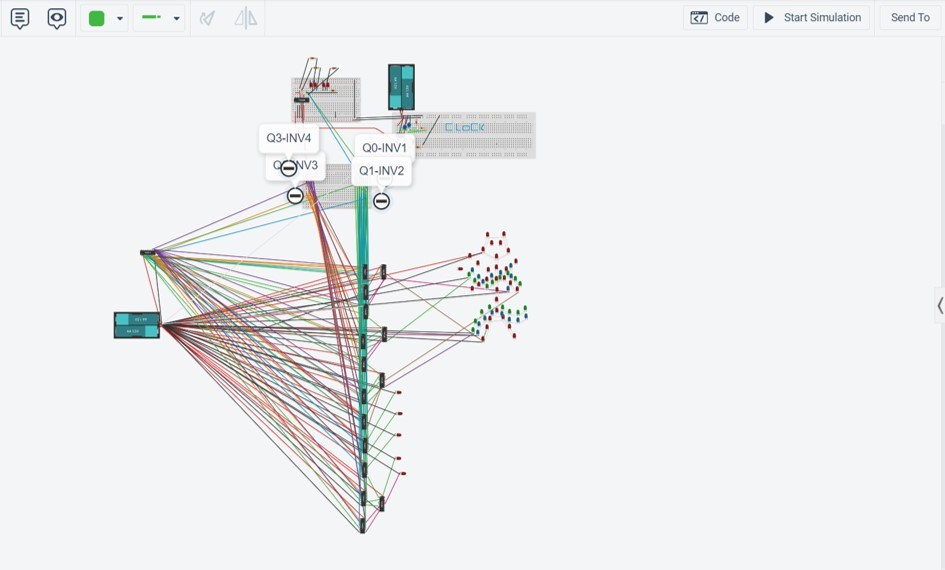It is not the most straight forward circuit, but a few hacks may make things a bit less eye-straining
Color codes
Use a single color for the wires of each clock, and adjust ground and vcc to black and red. In small circuits it does not make a huge difference, but here if you get lost you will suffer.Pull away
Tinkercad knows when you connect two terminals. If you pull a component away, the connection will be intact. That is important in a component like the inverter; too many connections and your cursor might not catch the terminal because of the wires. Pulling it away will help you select without accidently holding a wrong wire and crying later.Label
Give outputs and components readable names to keep track of this mess. Especially that each ic will host many gates from the schematic.DO NOT DO THIS
Tips and Errors
Two separate circuits do not operate without common ground
Because ground is relative, for two circuits exchanging signals to be in sync they must have a common ground. Since Tinkercad is just a sim, the circuit did not breathe at all. In reality, it should work but behave unexpectedly.Connecting different LEDs
To visually represent our figure, many LEDs need to be connected together. Connect them in parallel to minimize voltage drop, especially that ics output low voltages.Simulator errors
Your own wellbeing is more important than anything. Sometimes, the simulation will not work as expected and there will not be a problem with the circuit, don’t consume much of your brain power if you are fairly sure the connection is fine. Go fry potatoes and chill.References
[3] Logic gates
[4] Tinkercad sim
[5] Stickman